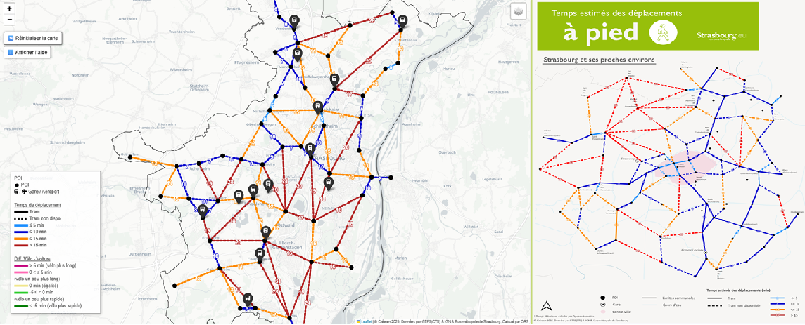
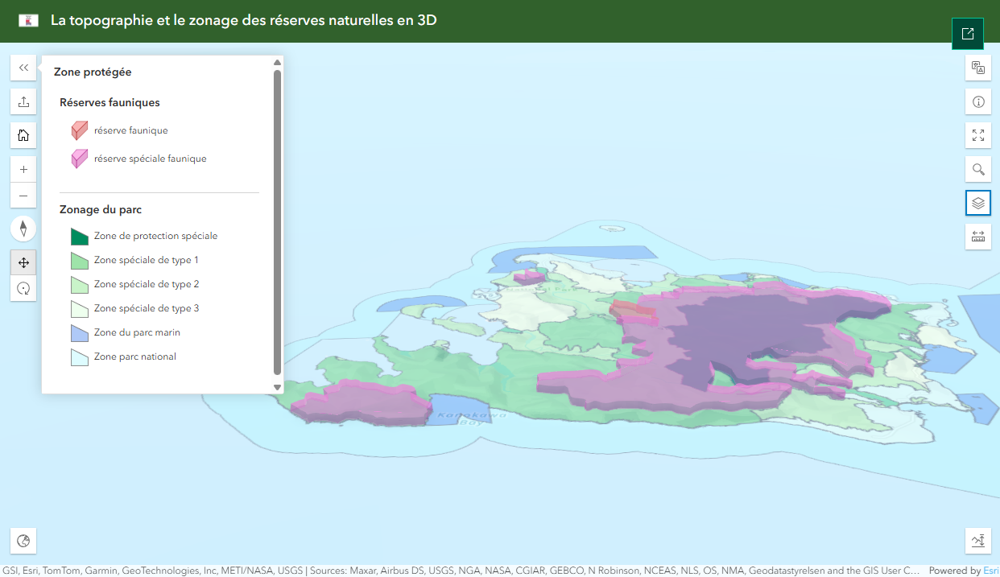

1. Mémoire en M1 (5-6/2025)
Invention d’une méthodologie automatisée et réprésentation cartographique des temps des déplacements vers la mobilité décarbonée (18/20)

2. Site web d’observatoire territorial du Parc national d'Iriomote-Ishigaki au Japon(4/2025)
Cartographie dynamique (2D/3D/interactive) et representations graphiques sous ArcGIS Online & Analyse territoriale & Infographie

3. Page web HTML du vieillissement démographique (4/2025)
Géovisualisation & Datavisualisation & Infographie